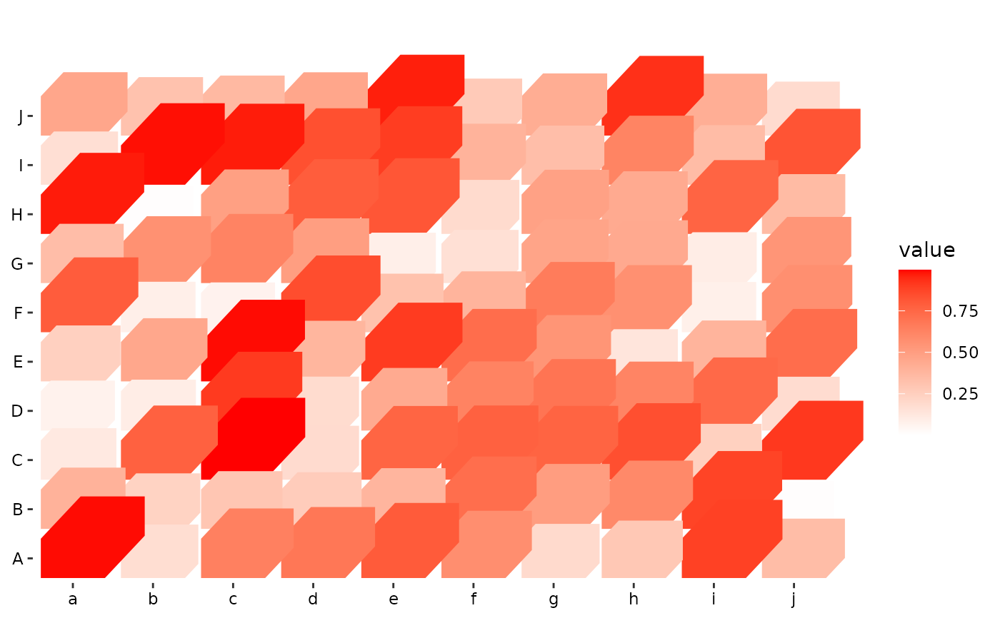

z scales
Arguments
- name
The name of the scale. Used as the axis or legend title. If
waiver(), the default, the name of the scale is taken from the first mapping used for that aesthetic. IfNULL, the legend title will be omitted.- ...
Other arguments passed on to
continuous_scale(),binned_scale(), ordiscrete_scale()as appropriate, to control name, limits, breaks, labels and so forth.- range
Output range of z values. Must larger than 0.
- guide
A function used to create a guide or its name. See
guides()for more information.
Examples
set.seed(7)
mat <- matrix(runif(100), 10)
rownames(mat) <- LETTERS[1:10]
colnames(mat) <- letters[1:10]
ggheatmap(mat,
filling = FALSE,
theme = theme(
legend.box.spacing = unit(10, "mm"),
plot.margin = margin(t = 15, unit = "mm")
)
) +
geom_tile3d(aes(fill = value, z = value, width = 0.8, height = 0.8)) +
scale_z_continuous(range = c(0.2, 1)) +
coord_cartesian(clip = "off")
